Σχεδιάζοντας Καμπύλες#
![Ο επίκαιρος πίνακας *Οι δρόμοι του Παρισιού, μία βροχερή μέρα* του `Gustave Caillebotte <https://en.wikipedia.org/wiki/Gustave_Caillebotte>`__.](_static/images/uploads/2022/11/polynomial13.png,_static/images/uploads/2022/11/polynomial14.png,_static/images/uploads/2022/11/polynomial02.png,_static/images/uploads/2022/11/polynomial03.png,_static/images/uploads/2022/11/polynomial05-2.png,_static/images/uploads/2022/11/polynomial05.png,_static/images/uploads/2022/11/polynomial05-1.png,_static/images/uploads/2022/11/polynomial01.png,_static/images/uploads/2022/11/polynomial15.png,_static/images/uploads/2022/11/polynomial17.png,_static/images/uploads/2022/11/polynomial07.png,_static/images/uploads/2022/11/polynomial13-1.png,_static/images/uploads/2022/11/polynomial11.png,_static/images/uploads/2022/11/polynomial12.png,_static/images/uploads/2022/11/polynomial16.png,_static/images/uploads/2022/11/polynomial08.png,_static/images/uploads/2022/11/gustave_caillebotte_-_paris_street_rainy_day_-_google_art_project.jpg,_static/images/uploads/2022/11/polynomial05-4.png,_static/images/uploads/2022/11/polynomial06.png,_static/images/uploads/2022/11/polynomial05-3.png,_static/images/uploads/2022/11/polynomial09.png)
Ο επίκαιρος πίνακας Οι δρόμοι του Παρισιού, μία βροχερή μέρα του Gustave Caillebotte.#
Πολλές φορές χρειάζεται κανείς να σχεδιάσει μία καμπύλη με κάποιες συγκεκριμένες καλές ιδιότητες:
να είναι μονότονη σε συγκεκριμένα διαστήματα,
να έχει ακρότατα σε συγκεκριμένα σημεία,
να έχει σημεία καμπής σε συγκεκριμένα σημεία,
και ούτω καθεξής. Στο χαρτί ή στον πίνακα αυτό είναι σχετικά εύκολο, είναι η αλήθεια, και δε χρειάζεται, δα, και κάποια τρομερή επιδεξιότητα. Ωστόσο, τι γίνεται όταν θέλουμε να σχεδιάσουμε μία τέτοια καμπύλη στον υπολογιστή μας;
Η αλήθεια είναι ότι μία γραφίδα μπορεί, σε έναν μεγάλο βαθμό, να λύσει τέτοια προβλήματα. Ειδικότερα, δε, αν μιλάμε για κάποιο καλό κιτ σχεδίασης γραφικών, τότε το αποτέλεσμα θυμίζει ή, πολλές φορές, ξεπερνά τις προσδοκίες μας. Αλλά, για να κάνουμε μία μικρή γραφική παράσταση δεν είναι κρίμα να ξοδέψουμε τα μαλλιά της κεφαλής μας; Δεν είναι κάπως σαν να παίρνουμε μία καραμπίνα για να σκοτώσουμε ένα τόσο δα κουνουπάκι; - έκφραση δανεισμένη από μαθητή μου, βλ. εδώ.
Τι θα έλεγε ο Karl Weierstrass;#
Ο Karl Weierstrass είναι ένας από τους πρωτεργάτες του σύγχρονου απειροστικού λογισμού. Οπότε, είναι απολύτως λογικό να απευθυνθούμε σε αυτόν για ένα ζήτημα τόσο φλέγον όσο η χάραξη μίας γραφικής παράστασης. Αλλά, επειδή είναι λίγο δύσκολο να του μιλήσουμε απευθείας τα τελευταία χρόνια (λίγο η πανδημία, λίγο το ένα, λίγο το άλλο), θα τα πούμε με έναν από τους πιο γνωστούς απογόνους του: το Θεώρημα Προσέγγισης του Weierstrass.
Το εν λόγω θεώρημα έχει ως εξής:
An \(f:[a,b]\to\mathbb{R} ` είναι μία συνεχής συνάρτηση, τότε για κάθε :math:\)varepsilon>0 ` υπάρχει μία πολυωνυμική συνάρτηση \(p ` έτσι ώστε για κάθε :math:`x\in[a,b] ` να ισχύει ότι :math:\)|f(x)-p(x)|<varepsilon. `
Πρακτικά, το παραπάνω μας λέει ότι αν μας δώσει κάποιος άνθρωπος μία συνάρτηση με γραφική παράσταση όπως η παρακάτω:

Μία αμέριμνη γραφική παράσταση…#
κι ένας άλλος άνθρωπος (μπορεί κι ο ίδιος, δεν έχει σημασία) μας ρωτήσει: «Μπορείτε να βρείτε ένα πολυώνυμο με γραφική παράσταση μέσα στην πράσινη «ζώνη»;»:

εμείς θα του απαντήσουμε: «Βεβαίως!»
Πράγματι, όσο «στενή» και να είναι αυτή η πράσινη ζώνη γύρω από τη γραφική παράσταση της συνάρτησής μας, εμείς μπορούμε, γιατί έτσι μας εγγυάται το Θεώρημα Προσέγγισης του Weierstrass, να βρούμε μία πολυωνυμική συνάρτηση με γραφική παράσταση που να «ζει» εκεί μέσα.
Άρα, θα πει κάποιος πιο πονηρεμένος, αν επιλέξουμε αυτή τη ζώνη να είναι αρκετά «στενή», η γραφική παράσταση του πολυωνύμου μας θα μοιάζει αρκετά με αυτήν της συνάρτησής μας. Άρα, αφού θα έχουμε τον τύπο του πολυωνύμου, θα μπορούμε εύκολα να τη σχεδιάσουμε και στον υπολογιστή μας - π.χ. χρησιμοποιώντας το GeoGebra ή το Desmos ή κάποιο άλλο εργαλείο.
Σωστά;
Όχι, είναι η αλήθεια. Όχι, τουλάχιστον, τόσο εύκολα όσο τα περιγράψαμε παραπάνω. Μπορεί ο κύριος Weierstrass να μας έχει δώσει ένα απείρου κάλλους αποτέλεσμα, ωστόσο δε μας έχει πει πώς μπορούμε να βρούμε ποιο ακριβώς είναι αυτό το πολυώνυμο - αυτό που ξέρουμε για αυτό είναι απλώς ότι υπάρχει.
Άρα, μία τρύπα στο νερό κάναμε…
Ρίζες#
Παρέα με τα πολυώνυμα έρχονται και οι ρίζες τους. Πράγματι, αν ψάξετε στο Google τον όρο «πολυώνυμο» θα βρείτε περίπου 37,000 αποτελέσματα. Αν, τώρα προσθέσετε και τη λέξη «ρίζες» στη γραμμή αναζήτησης θα βρείτε περίπου 24,500 αποτελέσματα. Ήτοι, ο όρος «πολυώνυμο» εμφανίζεται περίπου δύο στις τρεις φορές παρέα με τον όρο «ρίζες» στο ελληνικό διαδίκτυο. Εντάξει, μπορεί να μην περιμέναμε την Google να μας επιβεβαιώσει κάτι που έχουμε καταλάβει ήδη από το σχολείο, αλλά είναι αρκετά ευχάριστο όταν οι υποψίες μας επιβεβαιώνονται (όχι πάντα, ίσως, αλλά ας μην ανοίξουμε τώρα υποθέσεις από το αρχείο χωρίς λόγο).
Τέλος πάντων, παρεκτραπήκαμε. Μιλώντας, όμως, για πολυώνυμα και ρίζες, ας δούμε τρία περίφημα και ξακουστά μονώνυμα:

Είναι όντως ξακουστά - όσο ξακουστά μπορεί να είναι τα μονώνυμα…#
Σχολικές γραφικές παραστάσεις, που κρύβουν όμως πολύ και ιδιαίτερα χρήσιμο φορτίο για την περίπτωσή μας. Παρατηρώντας λίγο τις παραπάνω καμπύλες, αρχικά βλέπουμε ότι και οι τρεις τους περνούν από την αρχή των αξόνων. Αν και προφανές, έχει ιδιαίτερη σημασία, καθώς και οι τρεις τους το κάνουν αυτό με έναν διαφορετικό τρόπο:
η \(y=x\) διασχίζει αμφότερους τους άξονες χωρίς να αγχώνεται η ιδιαίτερα,
η \(y=x^2\) ίσα που χαϊδεύει τον οριζόντιο άξονα, μένοντας από τη μία μεριά του μόνο και,
η \(y=x^3\) περνά διστακτικά αλλά επιδέξια από τη μία μεριά του άξονα προς την άλλη.
Πιο επιστημονικά, θα μπορούσαμε να συνοψίσουμε τα παραπάνω σε έναν πίνακα όπως αυτόν εδώ:
<figure class=»wp-block-table is-style-regular»>
<figcaption class=»wp-element-caption»>
Οι ιδιότητες των ριζών των παραπάνω απλών μονωνύμων.
</figcaption>
Όπως εύκολα παρατηρεί κανείς, αυτό που διαφοροποιεί τα παραπάνω μονώνυμα είναι ο βαθμός τους, που κυμαίνεται από 1 έως 3. Για την ακρίβεια, η ουσιώδης διαφορά βρίσκεται λίγο πιο… δίπλα από την έννοια του βαθμού. Γενικά, ορίζουμε ως πολλαπλότητα μίας ρίζας \(\rho\) ενός πολυωνύμου \(p\) τον μέγιστο εκθέτη \(k\) έτσι ώστε:
όπου, σαφώς, το \(q(x)\) δεν έχει το \((x-\rho)\) ως παράγοντα. Πρακτικά, η πολλαπλότητα μίας ρίζας, \(\rho,\) είναι το (μέγιστο δυνατό) πλήθος των φορών που εμφανίζεται ο παράγοντας \((x-\rho)\) στην παραγοντοποίηση του \(p.\) Έτσι, για παράδειγμα, το παρακάτω πολυώνυμο:
έχει το \(0\) ως ρίζα πολλαπλότητας 2 (διπλή ρίζα), το \(2\) ως ρίζα πολλαπλότητας 4 (τετραπλή ρίζα) και το \(-3\) ως ρίζα πολλαπλότητας 3 (τριπλή ρίζα).
Χρησιμοποιώντας την έννοια της πολλαπλότητας, μπορούμε να ξαναγράψουμε τον παραπάνω πίνακα ως εξής:
<figure class=»wp-block-table is-style-regular»>
Πολλαπλότητα |
Σημείο τομής με xʹx |
|---|---|
Απλή |
Απλώς σημείο τομής |
Διπλή |
Σημείο επαφής |
Τριπλή |
Σημείο επαφής και σημείο καμπής |
<figcaption class=»wp-element-caption»>
Πολλαπλότητες και σημεία τομής, μία σχέση αγάπης.
</figcaption>
Είναι αρκετά απλό να αποδείξει κανείς τις παραπάνω ιδιότητες, ακόμα και με σχολική ύλη. Όλες οι αποδείξεις βασίζονται στην ακόλουθη σχετικά προφανή αναδιατύπωση του ορισμού της πολλαπλότητας:
Ένας αριθμός \(\rho ` θα λέμε ότι είναι ρίζα πολλαπλότητας :math:`k\in\mathbb{Z}_{+} ` ενός πολυωνύμου :math:`p ` αν υπάρχει ένα πολυώνυμο :math:`q ` *που δεν έχει ρίζα το* :math:\)rho ` έτσι ώστε: :math:`p(x)=(x-rho)^kq(x). `
Με βάση αυτήν μπορούμε να αποδείξουμε και το ακόλουθο κομψό αποτέλεσμα:
Ένας αριθμός :math:`rho ` είναι ρίζα πολλαπλότητας :math:`kinmathbb{Z}_{+} ` ενός πολυωνύμου :math:`p ` αν και μόνο αν είναι ρίζα κάθε παραγώγου τάξεως μέχρι και :math:`k-1 ` και δεν είναι ρίζα της παραγώγου τάξεως :math:`k ` του :math:`p. `
Η απόδειξη είναι σχετικά απλή. Για το ευθύ, αν έχουμε μία ρίζα, \(\rho,\) ενός πολυωνύμου, \(p,\) πολλαπλότητας \(k\) τότε θα υπάρχει ένα πολυώνυμο \(q\) που δεν έχει ρίζα το \(\rho\) και ισχύει:
Η απόδειξη θα προχωρήσει με επαγωγή στο \(k:\)
Επαγωγική Βάση: Για \(k=1\) έχουμε \(p(x)=(x-\rho)q(x)\) και άρα \(pʹ(x)=q(x)+(x-\rho)qʹ(x),\) επομένως \(pʹ(\rho)=q(\rho)\neq0,\) που ήταν το ζητούμενο.
Επαγωγική Υπόθεση: Υποθέτουμε ότι για κάποιο \(k\geq1\) έχουμε αποδείξει το ζητούμενο, δηλαδή ότι αν \(p(x)=(x-\rho)^kq(x)\) με το \(\rho\) να μην είναι ρίζα του \(q(x)\) τότε το \(\rho\) είναι ρίζα της \(p^(n)\) για κάθε \(n=1,2\ldots,k-1\) αλλά όχι και της \(p^{(k)}.\)
Επαγωγικό Βήμα: Έστω ένα πολυώνυμο \(p\) έτσι ώστε \(p(x)=(x-\rho)^{k+1}q(x)\) και το \(\rho\) να μην είναι ρίζα του \(q.\) Τότε έχουμε \(pʹ(x)=(x-\rho)^kq(x)+(x-\rho)^{k+1}qʹ(x)=(x-\rho)^k(q(x)+(x-\rho)qʹ(x)).\) Συνεπώς, το \(pʹ\) έχει το \(\rho\) ως ρίζα πολλαπλότητας \(k\) καθώς $q(rho)neq0$ και άρα από την επαγωγική μας υπόθεση γνωρίζουμε ότι το \(pʹ\) και όλες (και μόνο αυτές) οι παράγωγοί του μέχρι και τάξεως \(k-1\) έχουν ρίζα το \(\rho.\) Όμως, αυτές είναι ακριβώς οι παράγωγοι μέχρι και τάξεως \(k\) του \(p,\) που ήταν το ζητούμενο.
Αντίστροφα, τώρα, θα αποδείξουμε ότι αν ισχύει για κάποιο πολυώνυμο \(p(x)\) και έναν αριθμό \(\rho\in\mathbb{R}\) ότι το ίδιο το \(p\) και κάθε παράγωγος του \(p\) μέχρι και τάξεως \(k-1\) έχει το \(\rho\) ως ρίζα του ενώ το \(\rho\) δεν είναι ρίζα της παραγώγου τάξης \(k,\) τότε υπάρχει ένα πολυώνυμο \(q\) που δεν έχει το \(\rho\) ως ρίζα του έτσι ώστε:
Όπως και παραπάνω, θα εργαστούμε με επαγωγή στο \(k.\)
Επαγωγική Βάση: Για \(k=1\) το ζητούμενο είναι τετριμμένο, καθώς η υπόθεσή μας είναι ότι το \(\rho\) είναι ρίζα του \(p\) αλλά όχι του \(pʹ.\) Δηλαδή, \(p(\rho)=0\) ενώ \(pʹ(\rho)\neq0.\) Συνεπώς, το \(p\) γράφεται ως \(p(x)=(x-\rho)q(x)\) για κάποιο πολυώνυμο \(q.\) Παρατηρούμε ότι \(pʹ(x)=q(x)+(x-\rho)qʹ(x),\) επομένως \(q(\rho)=pʹ(\rho)\neq0,\) άρα το \(q\) δεν έχει ως ρίζα το \(\rho\) που ήταν και το ζητούμενο.
Επαγωγική Υπόθεση: Υποθέτουμε ότι ισχύει το ζητούμενο για κάποιο \(k\geq1.\) Δηλαδή, υποθέτουμε ότι αν ισχύει ότι το \(\rho\) είναι ρίζα κάθε παραγώγου τάξης μέχρι και \(k-1\) και δεν είναι ρίζα της \(p^{(k)},\) τότε το \(p(x)\) γράφεται στη μορφή \(p(x)=(x-\rho)^kq(x),\) όπου το \(q\) δεν έχει ως ρίζα το \(\rho.\)
Επαγωγικό Βήμα: Ας υποθέσουμε ότι έχουμε ένα πολυώνυμο \(p\) του οποίου κάθε παράγωγος τάξης μέχρι και \(k\) έχει ως ρίζα το \(\rho,\) ενώ το \(\rho\) δεν είναι ρίζα της \(p^{(k+1)}.\) Αφού το \(\rho\) είναι ρίζα του \(p,\) έπεται ότι \(p(x)=(x-\rho)Q(x),\) για κάποιο πολυώνυμο \(Q.\) Τώρα, παρατηρούμε ότι \(pʹ(x)=Q(x)+(x-\rho)Qʹ(x).\) Ξαναπαραγωγίζοντας, έχουμε \(pʹʹ(x)=2Qʹ(x)+(x-\rho)Qʹʹ(x).\) Ξαναπαραγωγίζοντας, έχουμε \(p^{(3)}(x)=3Qʹʹ(x)+(x-\rho)Q^{(3)}(x).\) Γενικά, μπορούμε εύκολα να δούμε ότι \(p^{(n)}(x)=nQ^{(n-1)}(x)+(x-\rho)Q^{(n)}(x).\) Για \(n\leq k\) έχουμε \(p^{(n)}(\rho)=0,\) επομένως \(nQ^{(n-1)}(\rho)=0.\) Συνεπώς, το \(Q\) είναι ένα πολυώνυμο που έχει ρίζα το \(\rho\) καθώς και κάθε παράγωγός του τάξης έως και \(k-1.\) Επίσης, από την παραπάνω σχέση, \(Q^{(k)}(\rho)\neq0,\) συνεπώς, από την επαγωγική μας υπόθεση, ισχύει ότι \(Q(x)=(x-\rho)^kR(x),\) όπου το \(R(x)\) δεν έχει το \(\rho\) ως ρίζα. Συνεπώς, \(p(x)=(x-\rho)^{k+1}R(x),\) όπως θέλαμε.
Ουφ, εντάξει, κουραστήκαμε, αλλά αποδείξαμε ένα σημαντικό αποτέλεσμα - εντάξει, η σημασία του μπορεί να βρίσκεται στο παρασκήνιο, αλλά παραμένει σημαντικό, τουλάχιστον στο μυαλό μας.
Κι ένα παράδειγμα…#
Υποσχεθήκαμε παραπάνω ότι η πρόταση που μόλις αποδείξαμε μπορεί να μας βοηθήσει όσα αποτελέσματα συνοψίσαμε για τις πολλαπλότητες των ριζών και τον τρόπο που τέμνει η γραφική παράσταση μίας συνάρτησης τον άξονα \(xʹx.\) Ας δούμε τη γραφική παράσταση που φαίνεται στο παρακάτω σχήμα:
{kind=link}
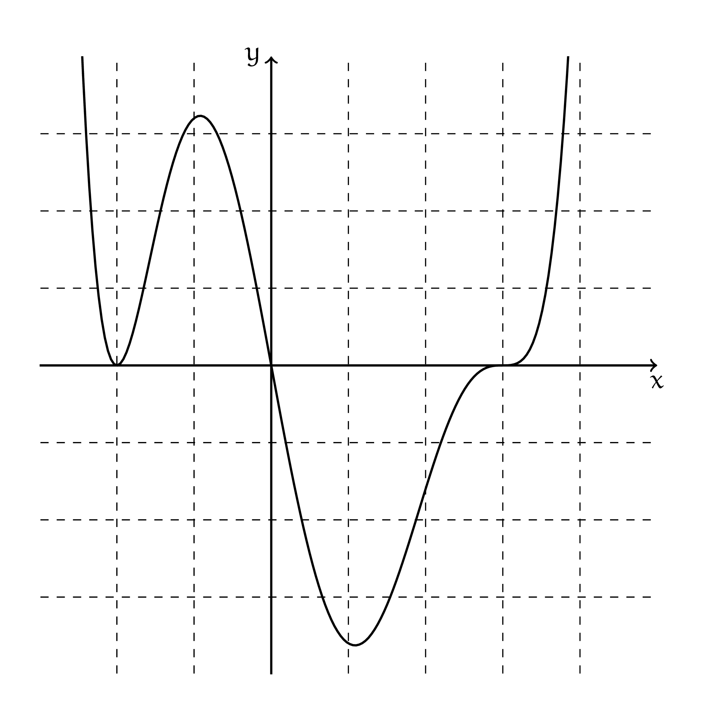
Ωραία γραφική παράσταση, έτσι δεν είναι;#
Η παραπάνω γραφική παράσταση, αν δεν το έχετε ήδη καταλάβει, είναι η γραφική παράσταση της πολυωνυμικής συνάρτησης:
Τώρα, το παραπάνω μπορεί να μη φαίνεται ιδιαίτερα χρήσιμο, αλλά αν το παραγοντοποιήσουμε, μπορούμε να καταλάβουμε πολλά για όσα συζητήσαμε παραπάνω. Η εν λόγω πολυωνυμική συνάρτηση παραγοντοποιείται ως εξής:
Με τη βοήθεια της παραπάνω παραγοντοποίησης μπορούμε να παρατηρήσουμε ότι η \(p(x)\) έχει:
μία απλή ρίζα στο \(0,\)
μία διπλή ρίζα στο \(-1,\)
μία τριπλή ρίζα στο \(3.\)
Με βάση τις προβλέψεις του παραπάνω πίνακα, αναμένουμε η γραφική παράσταση της \(p\) να:
τέμνει απλά τον άξονα \(xʹx\) στο \((0,0),\)
εφάπτεται στον άξονα \(xʹx\) στο \((-1,0),\)
τέμνει και κάμπτεται στο σημείο \((3,0).\)
Αν ρίξουμε μία ματιά στο σχήμα που έχουμε πιο πάνω, παρατηρούμε ότι όλα αυτά ισχύουν. Αν και δε θα δώσουμε αυστηρή απόδειξη των παραπάνω, μπορούμε να δούμε τη βασική ιδέα πίσω από αυτήν. Ας εστιάσουμε για λίγο στο \(x_0=3.\) Παρατηρούμε ότι, αν:
τότε έχουμε:
Τώρα, αν περιοριστούμε σε \(x\approx3\) μπορούμε να πούμε - επειδή η \(q\) είναι συνεχής - ότι \(q(x)\approx q(3)=2.4.\) Συνεπώς, για \(x\approx3\) μπορούμε να ισχυριστούμε ότι:
Αυτά όλα μπορεί να φαίνονται πολύ χαλαρά, αλλά ένα ακόμα σχήμα θα σας πείσει για την αλήθεια των παραπάνω:
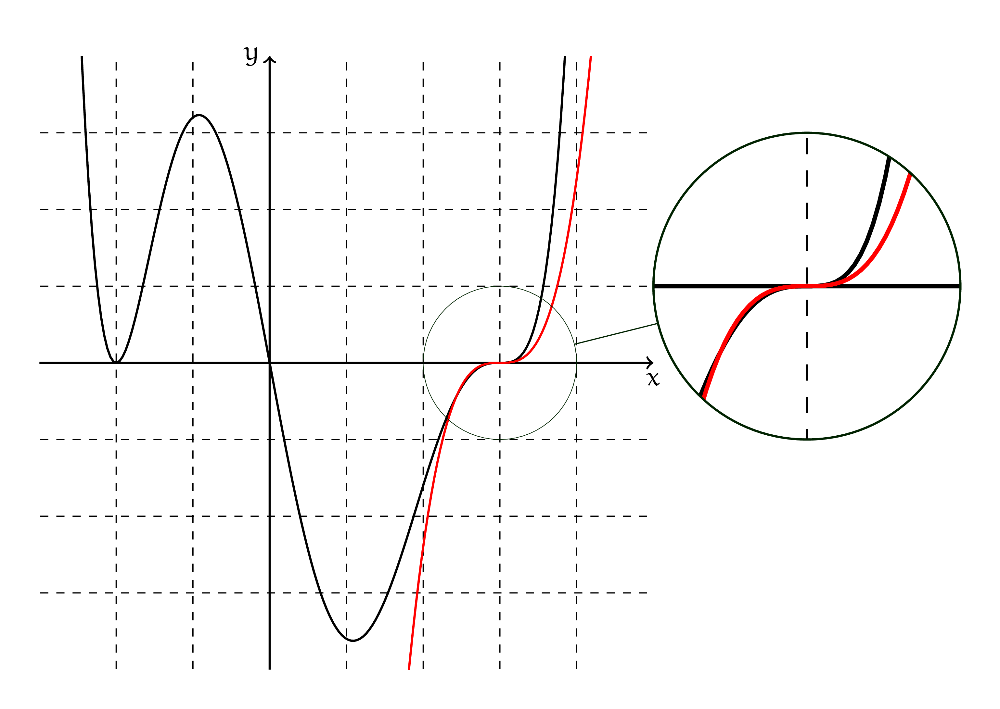
Ζουμ: το βασικότερο εργαλείο κατανόησης του απειροστικού λογισμού.#
Η κόκκινη καμπύλη δεν είναι άλλη από τη γραφική παράσταση της \(2.4(x-3)^3\) που, όπως είχαμε υποσχεθεί, είναι πολύ κοντά στη γραφική παράσταση της \(p\) όσο παραμένουμε κοντά στο \(x_0=3.\) Αν, τώρα, αντικαταστήσετε στα παραπάνω επιχειρήματα τα \(\approx\) με τα κατάλληλα μαθηματικά εργαλεία (spolier alert: όρια) τότε μπορείτε σχετικά εύκολα να ανασκευάσετε μία πειστική απόδειξη για όλα τα παραπάνω.
Ώρα για ζωγραφική…#
Πολλά είπαμε, πολλά αποδείξαμε και «αποδείξαμε», ώρα τώρα να περάσουμε σε αυτό που υποσχεθήκαμε: θα ζωγραφίσουμε. Ας θυμηθούμε το αρχικό μας σχήμα:
Η αρχική μας συνάρτηση.#
Όπως παρατηρούμε, η εν λόγω συνάρτηση έχει:
ένα σημείο επαφής, το \((-1,0)\) με τον άξονα \(xʹx,\)
δύο απλά και πεζά σημεία τομής με τον άξονα \(xʹx,\) το \((1,0)\) και το \((3,0).\)
Έτσι, με βάση όλα όσα έχουμε πει παραπάνω, ένα υποψήφιο πολυώνυμο θα μπορούσε να είναι το εξής:
Η στιγμή της αλήθειας έφτασε, θα σχεδιάσουμε τη γραφική παράσταση του παραπάνω πολυωνύμου και…
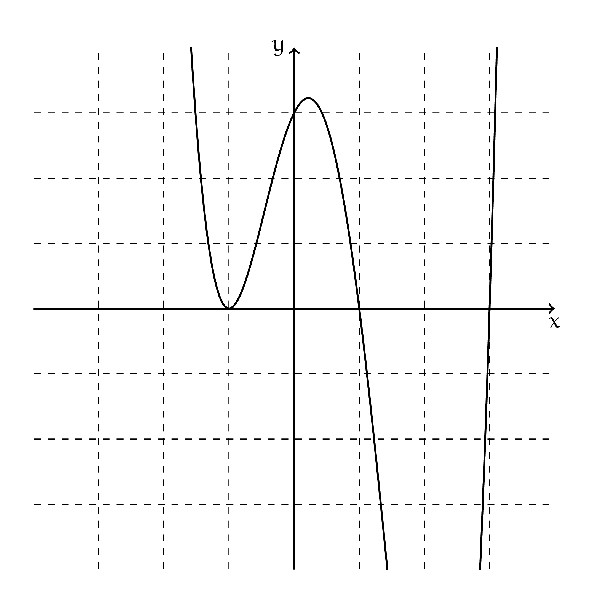
Πφφφφφ! Είμαστε κοντά, ωστόσο…#
…δε θα δούμε αυτό που περιμέναμε. Ωστόσο, χρειαζόμαστε ψυχραιμία, ένα από τα βασικά χαρακτηριστικά κάθε μαθηματικού. Ας βάλουμε λίγο τα σχήματά μας δίπλα-δίπλα, να τα καμαρώσουμε:
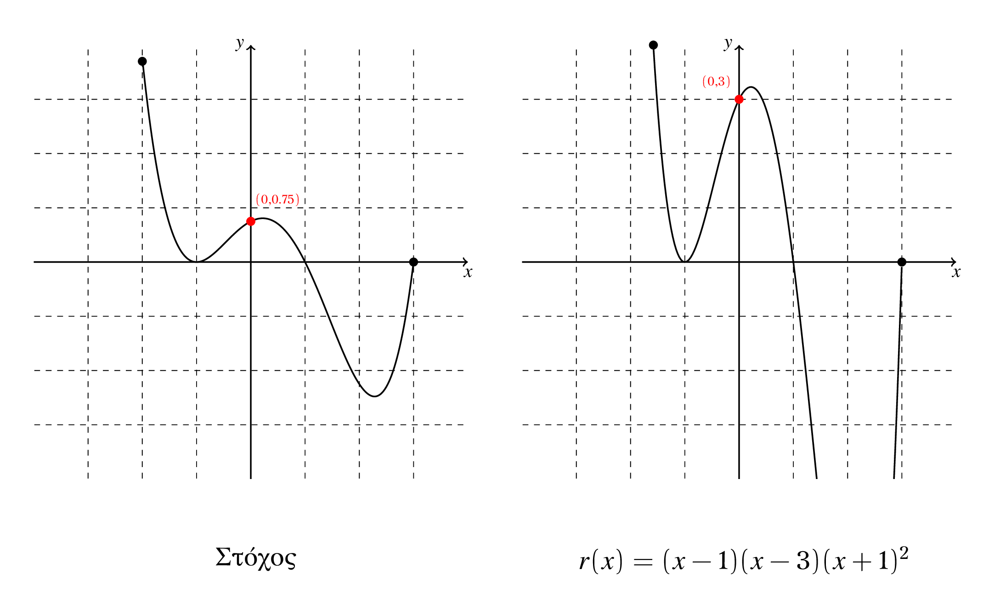
Σχεδόν κοντά…#
Τα κόκκινα σημεία στο παραπάνω σχήμα θα αποτελέσουν και τον οδηγό μας. Η ουσιαστική διαφορά που έχουν οι δύο γραφικές παραστάσεις είναι η κλίμακά τους. Με άλλα λόγια, αν καταφέρουμε να «συμπιέσουμε» τη δεξιά γραφική παράσταση κατάλληλα, ίσως καταφέρουμε να πάρουμε ένα αποτέλεσμα που να είναι πιο κοντά στο ζητούμενο αποτέλεσμα. Έτσι, λοιπόν, τα δύο κόκκινα σημεία μάς υποδεικνύουν τον συντελεστή «αναλογίας» ανάμεσα στις δύο γραφικές μας παραστάσεις. Για την ακρίβεια, η μία τέμνει τον κατακόρυφο άξονα στο 0.75 ενώ η άλλη στο 3, συνεπώς, αν θεωρήσουμε το:
παίρνουμε το εξής:
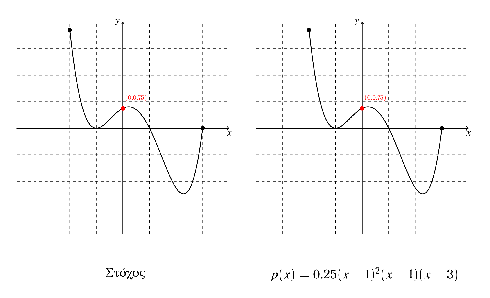
Εντάξει, πετάει η ομάδα!#
Πολύ ωραία τα καταφέραμε, δημιουργήσαμε ένα έργο τέχνης, δεν είναι απλά μία γραφική παράσταση αυτό. Είναι ένα αραβούργημα, ένα γιαννιώτικο ασημικό, ένα…
Τέλος πάντων, καλά τα είπαμε ως εδώ, αλλά, εντάξει, ήταν λίγο «σικέ» το σκηνικό, δε συμφωνείτε; Ας πάρουμε άλλη μία συνάρτηση:
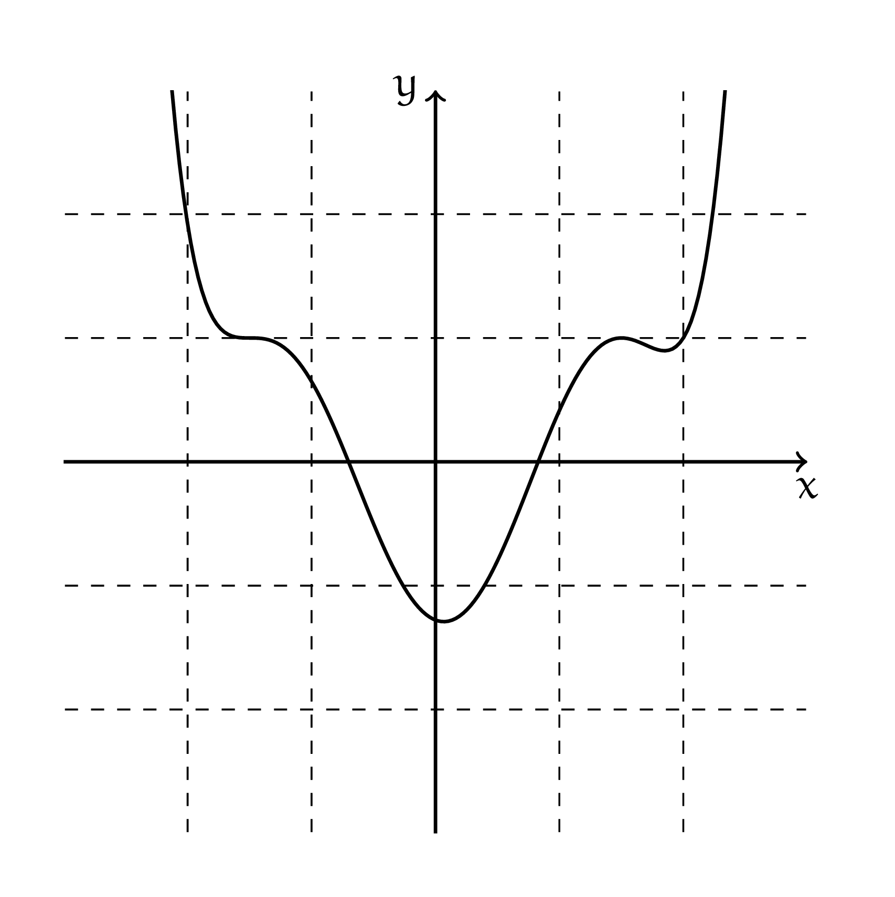
Μία «παραλίγο συμμετρική» γραφική παράσταση.#
Εδώ βλέπουμε δύο ρίζες, μία περίπου στο \(-0.7\) και μία περίπου στο \(0.8.\) Αμφότερες φαίνονται απλές, άρα μπορούμε να πούμε ότι μία καλή εκτίμηση θα ήταν η:
Ας δούμε τι κάναμε:
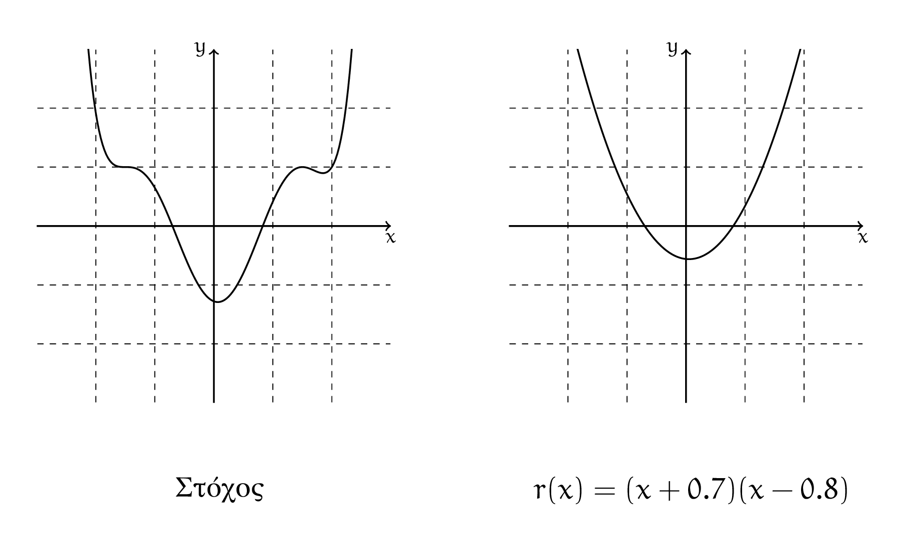
Εεεεεε…#
Εντάξει, δεν τα πήγαμε και τόσο καλά, είναι η αλήθεια. Ας πάρουμε, όμως, μία βαθιά ανάσα και ας προσπαθήσουμε να καταλάβουμε τι πήγε λάθος. Αν το καλοσκεφτείτε, η ουσιώδης δομή της γραφικής μας παράστασης δε βρίσκεται κοντά στον άξονα \(xʹx\) αλλά λίγο παραπάνω, όπως φαίνεται και στο παρακάτω σχήμα:
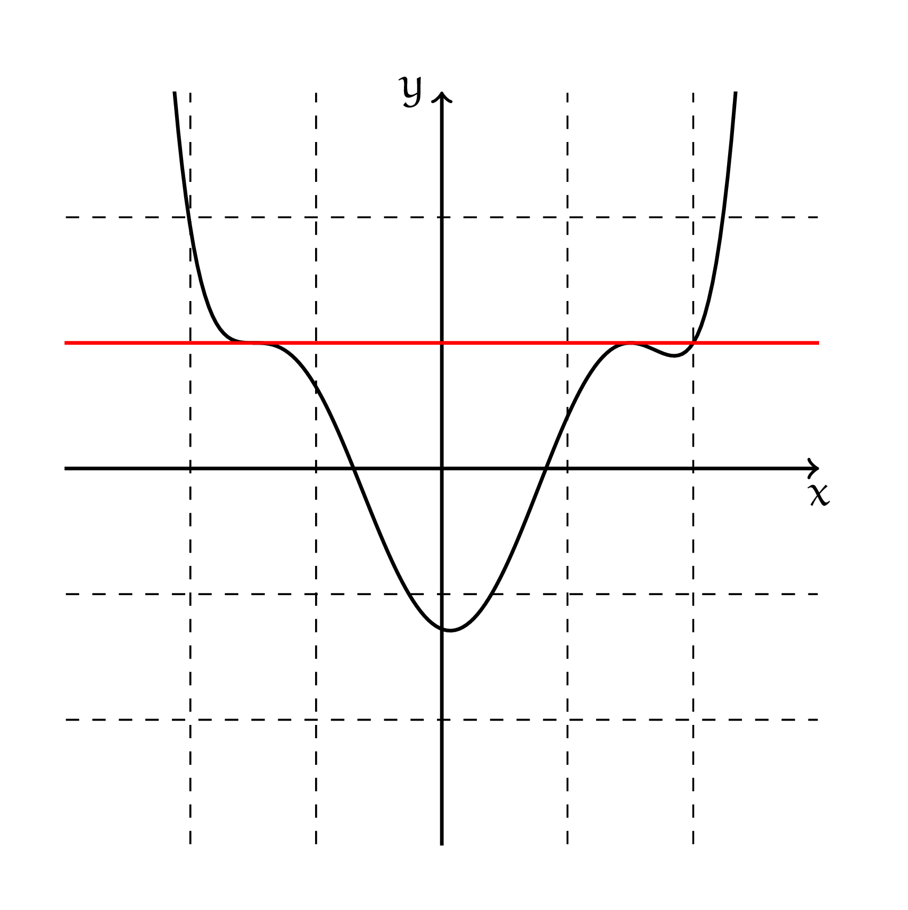
Είναι σημαντικό σε αυτήν τη ζωή να κοιτάμε ψηλά…#
Πάνω στην κόκκινη ευθεία - δηλαδή, την \(y=1\) - βλέπουμε ότι έχουμε:
ένα σημείο καμπής, στο \((-1.5,1),\)
ένα σημείο επαφής, στο \((1.5,1),\)
ένα θνητό σημείο τομής στο \((2,1).\)
Με βάση τα παραπάνω, ένα καλό πολυώνυμο θα μπορούσε να είναι το:
Το παραπάνω πολυώνυμο είναι ένα πολυώνυμο που έχει όλες τι ιδιότητες που αναφέραμε παραπάνω, απλά όχι επί του άξονα \(xʹx\) αλλά επί της ευθείας \(y=1\) που βρίσκεται μία μονάδα πάνω από τον άξονα \(xʹx.\) Το παρακάτω σχήμα υποδεικνύει ότι κάναμε (άλλη μία) σωστή μαντεψιά:
{kind=link}
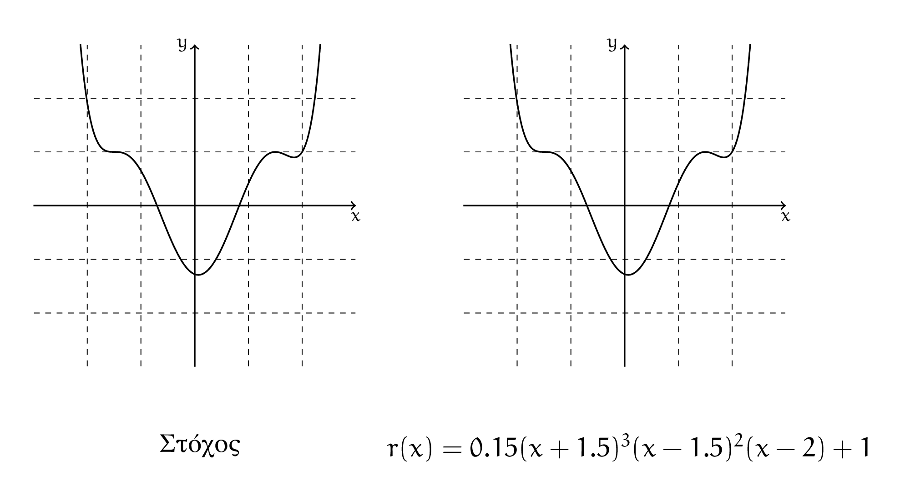
Εντάξει, το έχουμε με τη ζωγραφική, το έχουμε!#
Το πού μυριστήκαμε το 0.15 είναι απλό: δοκιμάσαμε κάμποσους συντελεστές και κρατήσαμε τον καταλληλότερο, όπως και παραπάνω. Αλλά, γιατί να σας κουράσουμε με αυτήν την ταλαιπωρία - δεν ταλαιπωρηθήκατε αρκετά ως τώρα, άλλωστε;
Στρίβουμε…#
Κι αν νομίζατε ότι «στρίβοντας» εννοούσαμε ότι θα αποχωρήσουμε, θα διαβάσετε την εφημερίδα σας και θα συνεχίσετε την όχι και τόσο ηλιόλουστη Κυριακή σας, κάνατε ένα πολύ μεγάλο λάθος. Πάρα πολύ μεγάλο λάθος. Δε θα στρίψουμε εμείς, αλλά οι γραφικές μας παραστάσεις. Ας χαζέψουμε λίγο το ακόλουθο σχήμα:
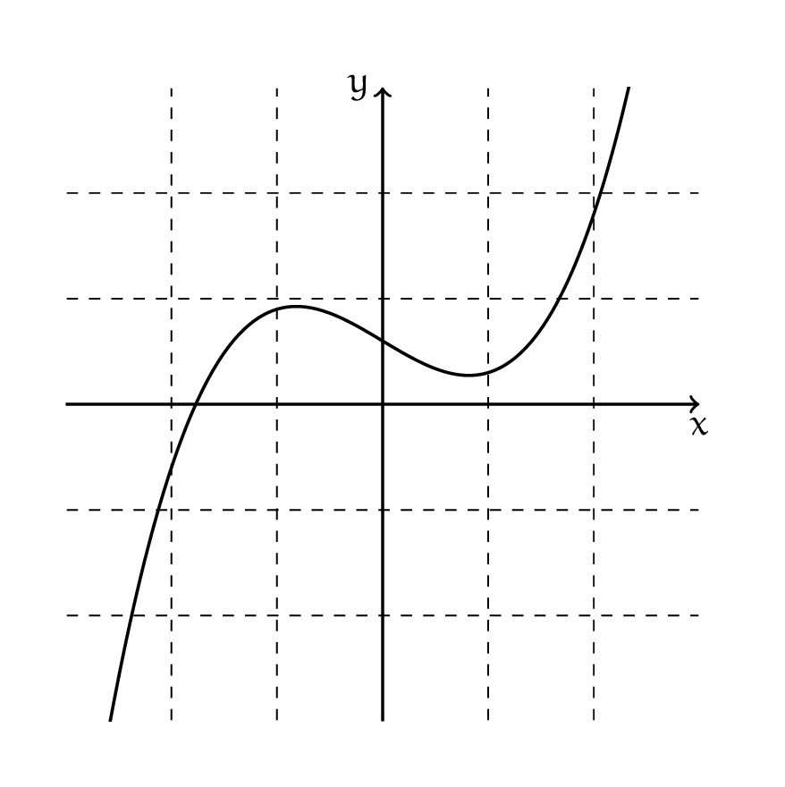
Ωραίο κι αυτό…#
Εντάξει, θα πει κανείς, εδώ είναι σχετικά εύκολα τα πράγματα. Μπορούμε να κάνουμε κάποια τεχνάσματα όπως και παραπάνω. Για την ακρίβεια, σχεδιάζουμε λίγες γραμμές στο παραπάνω σχήμα που θα μας βοηθήσουμε να βρούμε την άκρη στον μίτο της Αριάδνης:
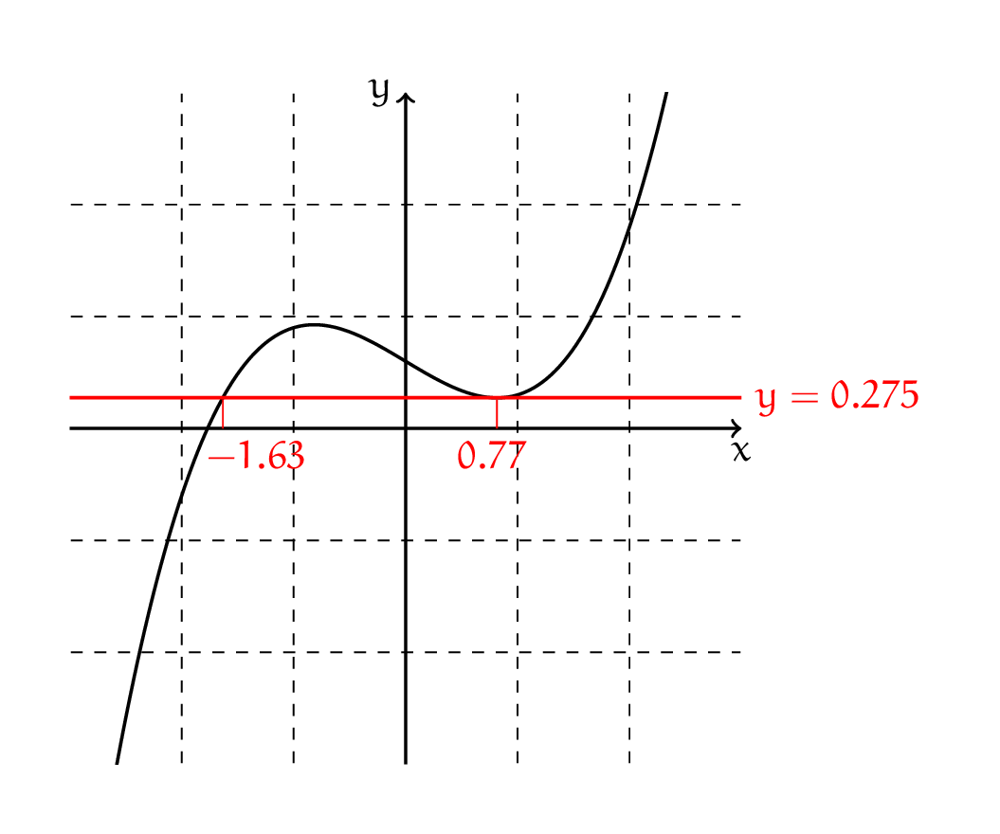
Μετρήσαμε κάποια πράγματα και τώρα θα ζωγραφίσουμε.#
Βρήκαμε έναν ένδιαφέροντα άξονα, που να πιάνει και το σημείο επαφής με τον «υποτιθέμενο» οριζόντιο άξονα \(y=0.275.\) Τώρα, δεν έχουμε παρά να σχεδιάσουμε τη γραφική παράσταση του πολυωνύμου:
Η εν λόγω γραφική παράσταση φαίνεται παρακάτω:
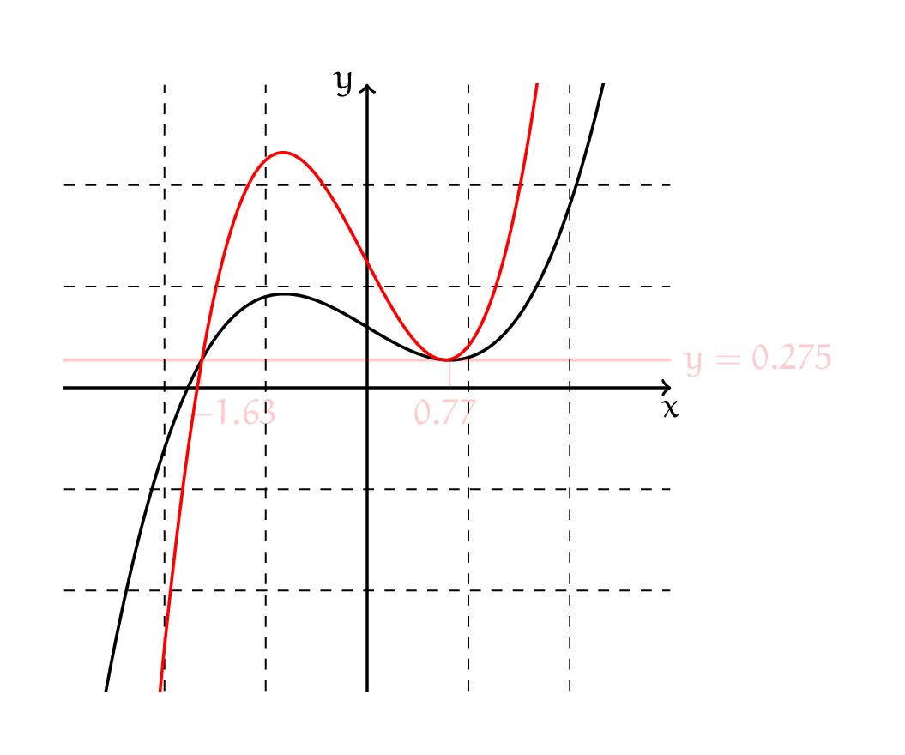
Σχεδόν εκεί που θέλαμε…#
Εντάξει, θα χρειαστεί να μικρύνουμε λίγο ακόμα τη γραφική μας παράσταση, οπότε, μετά από λίγες δοκιμές καταφέρνουμε το εξής:
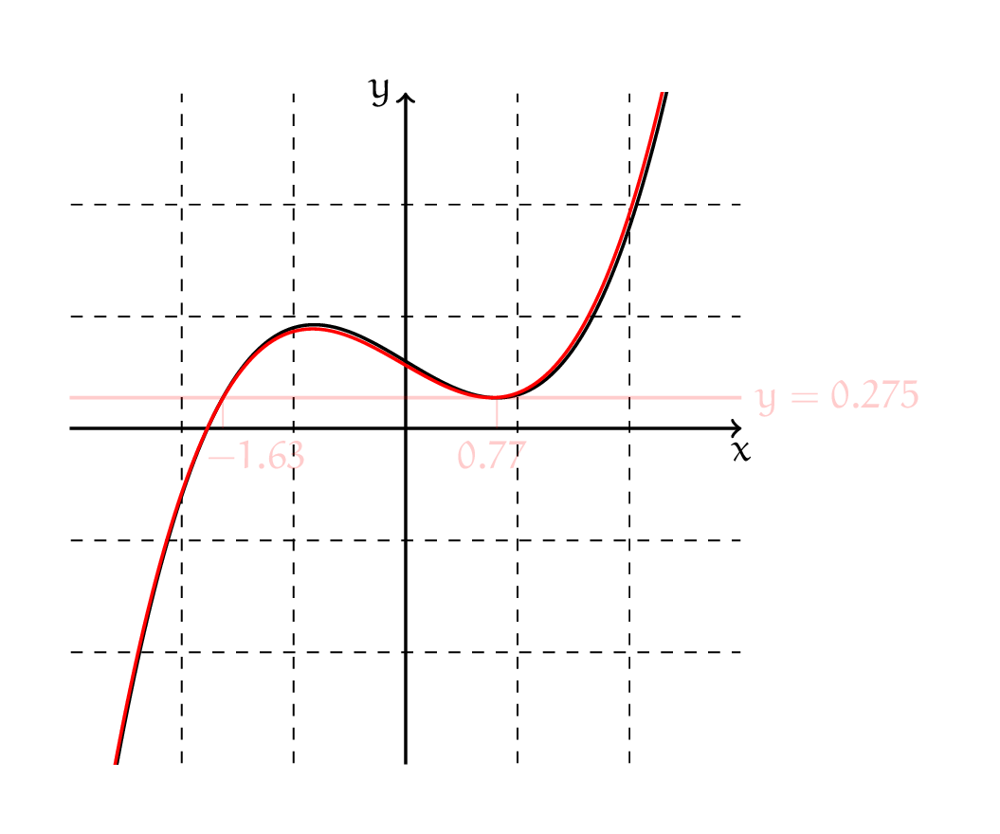
Τόσο κοντάαααα!#
Εξαιρετικό! Για την ιστορία, να πούμε ότι το κόκκινο πολυώνυμο είναι το:
Ωστόσο, κάποιος κακοπροαίρετος θα έλεγε: «Ναι, αλλά γιατί τώρα δεν ταιριάζουν απόλυτα οι δύο καμπύλες;». Γενικά, όπως φαντάζεστε, το θεώρημα το Weierstrass δε μας εγγυάται ότι η γραφική παράσταση του πολυωνύμου που θα βρούμε θα ταιράζει πλήρως με τη γραφική παράσταση της συνάρτησής μας, ωστόσο, εντάξει, εδώ εμείς έχουμε χρησιμοποιήσει μία πολυωνυμική συνάρτηση για να ζωγραφίσουμε την αρχική μας μαύρη γραφική παράσταση, οπότε θα έπρεπε να είχαμε καταφέρει να την εντοπίσουμε.
Γιατί, λοιπόν, αποτύχαμε;
Ας παρατηρήσουμε λίγο το ακόλουθο σχήμα:
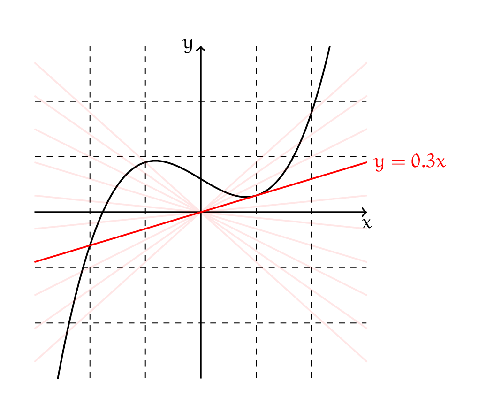
Μία κάπως ενδιαφέρουσα ευθεία…#
Η ευθεία \(y=0.3x\) είναι μία ευθεία που φαίνεται να έχει ιδιαίτερο ενδιαφέρον, καθώς φαίνεται η γραφική παράσταση που μας ενδιαφέρει να εφάπτεται σε αυτήν, μάλλον στο \(x_0=1.\) Επίσης, φαίνεται οι δύο καμπύλες να τέμνονται στο \(-2,\) επομένως, ίσως έχει ενδιαφέρον να σχεδιάσουμε τη γραφική παράσταση της:
Η γραφική της παράσταση φαίνεται παρακάτω:
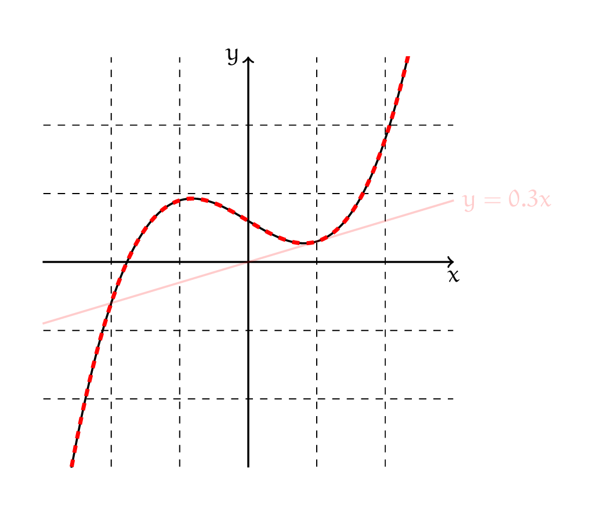
Μα καλά, τόση ακρίβεια, πια;#
Τώρα καταφέραμε να εντοπίσουμε ακριβώς το πολυώνυμο που είχαμε ζωγραφίσει στην αρχή! Ωστόσο, το βασικότερο που έχουμε να κρατήσουμε από το παραπάνω παράδειγμα είναι αυτό το τέχνασμα με τη «στροφή» μίας γραφικής παράστασης που μπορούμε να την πετύχουμε προσθέτοντας έναν απλό όρο της μορφής \(\alpha x.\) Προφανώς, αυτό που πετυχαίνουμε δεν είναι μία κανονική στροφή, αλλά ένας μετασχηματισμός που «μοιάζει» με στροφή και που συχνά χρησιμοποιούμε και αλλού, όπως, π.χ., για να αποδείξουμε το Θεώρημα Μέσης Τιμής μέσω του Θεωρήματος Rolle - βλ. και εδώ, σελ. 66.
Επίλογος#
Με στροφές ή χωρίς, με κατακόρυφες μεταφορές ή χωρίς, με χρώμα ή χωρίς, είδαμε αρκετούς τρόπους με τους οποίους μπορούμε με ένα απλό πολυώνυμο (εντάξει, όχι πάντα τόσο απλό) και λίγη υπομονή, να αποτυπώσουμε αρκετά πειστικά μία γραφική παράσταση που να έχει κάποιες θεμιτές ιδιότητες - μονοτονία, καμπή, ακρότατα κ.λπ. Μπορεί κανείς, αν θέλει, να ψάξει και σε πιο περίπλοκες κλάσεις συναρτήσεων - όπως οι ρητές συναρτήσεις - για να μπορέσει να αποτυπώσει και γραφικές παραστάσεις συναρτήσεων που έχουν, για παράδειγμα, κατακόρυφες ασύμπτωτες. Αλλά, αυτά θα τα συζητήσουμε στο μέλλον.
Ως τότε, καλή συνέχεια!
Καλό μεσημέρι και καλό διάβασμα!